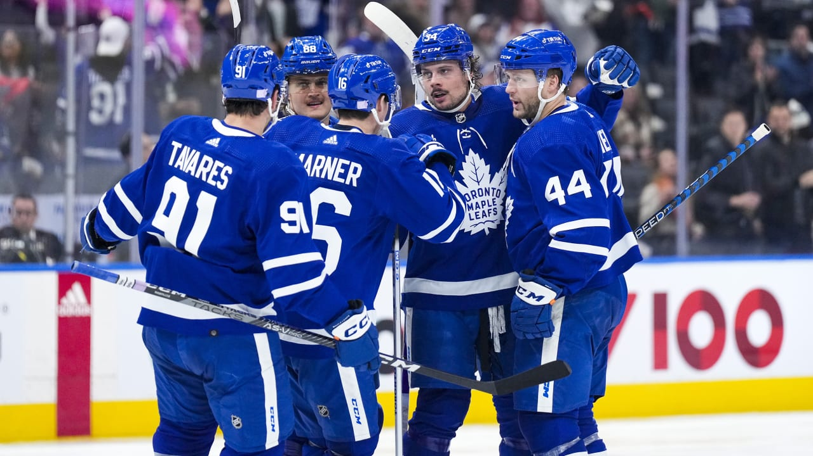

HOCKEY
Ice hockey is the most popular sport of Canada and a big part of Canadian culture. There are many hockey leagues for all ages and all skill levels. Most of the leagues are recreational, but some are professional or semi-professional. One of the popular junior hockey leagues in Canada is the OHL (Ontario Hockey League) which mainly consists of teams within Ontario but also includes a few teams from nearby American cities. The most popular professional ice hockey league is the NHL (National Hockey League) which is the 4th biggest sports league in North America after MLB (baseball), NBA (basketball), and NFL (football).
LONDON KNIGHTS
The London Knights are a team in the OHL and their home arena is Budweiser Gardens, here in downtown London. The Knights always seem to have success in the OHL, as evident by their 4 OHL championships over the last 18 years and 2 Memorial Cup championships in the same period. In 2023, the Knights made it all the way to the final round of the OHL championships against the Peterborough Petes, but their main goaltender got injured which caused them to struggle and eventually lose the series.
London Knights Sweeping OHL Championship
Toronto Maple Leafs
The NHL currently has 32 teams. 25 of the teams are based in the US and the other 7 are based in Canadian cities. The 7 Canadian teams are:
- Toronto Maple Leafs
- Ottawa Senators
- Montreal Canadiens
- Winnipeg Jets
- Edmonton Oilers
- Calgary Flames
- Vancouver Canucks

Although the majority of the NHL teams are based in American cities, about 40% of active NHL players are Canadian - and that number was even higher in previous years.
The Toronto Maple Leafs (or just Leafs, for short) is one of the teams in the NHL with the largest fanbases, especially in Southern Ontario but also across Canada. The Leafs have won the prestigious Stanley Cup 13 times since their inception, but are often ridiculed because their last championship was back in 1967. In recent years, the Leafs have repeatedly done well during the regular season but struggled in the playoffs with first-round eliminations which many fans called a curse. In the 2023 playoffs, the Leafs broke that "curse" by winning their first round series, but then went on to lose in the second-round so the victory of progress was short lived.
Some hockey fans in the London area cheer for Detroit Red Wings given the proximity to Detroit. Despite being in the US, Detroit is roughly the same distance from London as Toronto is! Some fans also cheer for other nearby American teams like the Buffalo Sabres, Boston Bruins, Pittsburgh Penguins, or Chicago Blackhawks.
Did You Know?
The popular coffee and donut chain Tim Hortons was co-founded by an NHL player named Miles "Tim" Horton. In 1964, the first location was opened in Hamilton, Ontario.
Did You Know?
The record for the most points scored by two brothers in the NHL is held by the iconic Wayne Gretzky and his brother Brent. The total between them is 2861 points: 2857 from Wayne and 4 from Brent.
Did You Know?
When the NHL first began there were only 6 teams. These are now called the "Original 6". The teams were: Toronto Maple Leafs, Montreal Canadiens, Boston Bruins, Detroit Red Wings, New York Rangers, and Chicago Blackhawks.